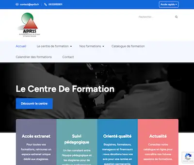

Case Study: Building a Training Center
From a Blank Page to Certification in 12 Months.

← Back to Case Studies
The Context
In 2021, the APR2S project was merely a legal entity. The challenge was to transform it into a fully operational training center, capable of providing certified courses in the demanding field of security and occupational health.
My Role
As the sole Project Manager and Head of Pedagogy, I was fully responsible for building the center, from certification strategy to the deployment of digital tools and curricula.
My Approach
- Certification Management: I simultaneously managed the processes to obtain essential certifications and accreditations: Qualiopi, INRS (for SST), Préfecture (for SSIAP), CNAPS, and ADEF (for TFP APS). This involved compiling complex files, ensuring process compliance, and managing audits.
- Digital Ecosystem Deployment: I selected and fully configured the Digiforma (LMS) management software. Concurrently, I developed the commercial website apr2s.fr to showcase the offerings and generate leads.
- Instructional Design: I designed the entire curriculum, including over 10 courses (SSIAP 1-2-3, TFP APS, Electrical Clearances, etc.), and recruited the team of expert trainers.
Results
- 5+ key certifications and accreditations obtained.
- 1 fully operational training center delivered in 1 year.
- 1 functional digital ecosystem (LMS + Website) deployed.
- Generated the **first sales** before my departure.